personal radmin
throw your computer into the ocean with confidence
E. David Aja
Course material
a brief personal history:
Auditor
- personal laptop {{< fa brands windows >}}
- RStudio in Citrix {{< fa brands windows >}}
- airgapped Posit Workbench {{< fa brands linux >}}
- airgapped Shiny Server Pro {{< fa brands linux >}}
- Special Issue Individual Laptop {{< fa brands windows >}} {{< fa brands linux >}}
- Special Issue Individual Desktop {{< fa brands windows >}}
- Special Issue Team Desktop {{< fa brands windows >}}
Data Scientist
- personal laptop {{< fa brands windows >}}
- work laptop {{< fa brands windows >}}
- RStudio in Citrix {{< fa brands windows >}}
- RStudio Server {{< fa brands linux >}}
Solutions Engineer
- personal laptop {{< fa brands windows >}}
- work laptop {{< fa brands apple >}}
- Posit Workbench Demo Server {{< fa brands linux >}}
- Posit Workbench Internal Server {{< fa brands linux >}}
- misc ephemeral environments
How do I…
- upgrade the version of R I’m using for this project?
- track which package versions I’m using for this project?
- move this project from one machine to another?
warmup
📦 library
R packages
- the natural unit for distributing R code
base R
- 14 base + 15 recommended packages
- ships with all binary distributions of R
For example, have you used lattice recently? 🤷
- it came with your R installation, can use out of the box
library(lattice)
Where do packages live locally?
By default, in the default library
.Library
All libraries for the current session
.libPaths()
All installed packages
installed.packages()
explore your package library
{{< countdown "7:30" >}}starting R
why?
Sometimes we want to change the way our code behaves without having to change the code.
R startup sequence

R startup sequence (our focus)

⚠️ Use a newline
startup files must end in a newline.
R may silently throw away the last line if you don’t do this.

.Renviron
environment variables
a […] named value that can affect the way running processes will behave on a computer
what goes in .Renviron
✅ R-specific environment variables
✅ API keys or other secrets
❌ R code
Editing .Renviron
usethis::edit_r_environ(scope = ?)
user
~/.Renviron
project
path/to/your/project/.Renviron
example .Renviron
read environment variables
Sys.getenv()
edit your user .Renviron
usethis::edit_r_environ()- add
WTF_USER=<your name>_user - restart your R session
CTRL + SHIFT + F10
CMD + SHIFT + 0 - Retrieve the value of WTF_USER
Sys.getenv("WTF_USER")
edit your project .Renviron
usethis::edit_r_environ("project")- add
WTF_PROJECT=<your name>_project - restart your R session
CTRL + SHIFT + F10
CMD + SHIFT + 0 - Retrieve the value of WTF_PROJECT
Sys.getenv("WTF_PROJECT")
what’s the value of WTF_USER after you set WTF_PROJECT?
.Renviron recap
project .Renviron “short-circuits” if it exists, your user .Renviron will not be evaluated
.Rprofile
R code that runs at the start of each session
?interactive()
TRUE
🧑💻
- sending individual lines of code to the console
☝️ most .Rprofile customization
FALSE
🤖
- knitting an RMarkdown document
R -e script.R
what to put in .Rprofile
- set a default CRAN mirror
- customize R prompt
what not to put in .Rprofile
If it matters for code you share, it should not be in .Rprofile
why shouldn’t these go in .Rprofile?
options(stringsAsFactors = FALSE)library(tidyverse)f <- dplyr::filtertheme_set(theme_bw())
discuss with your neighbor
Why might these be safe to put in .Rprofile?
dotfiles
https://github.com/search?q=.Rprofile
activity
usethis::edit_r_profile()- add
print("from my user Rprofile") - restart your R session
CTRL + SHIFT + F10
CMD + SHIFT + 0 - what value is printed when you restart?
usethis::edit_r_profile("project")- add
print("from my project Rprofile") - restart your R session
CTRL + SHIFT + F10
CMD + SHIFT + 0 - what value is printed when you restart?
.Rprofile recap
project .Rprofile “short-circuits”
if it exists, your user .Rprofile will not be evaluated
wrapping up
.Renviron
- secrets
- environment information
.Rprofile
- development dependencies
installing R packages
why
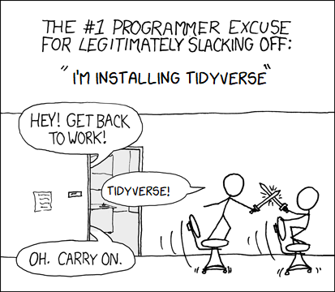
states of R packages
states of R packages
Binary
- compiled ahead of time
- easiest / fastest to install
where to get binaries
| CRAN | Posit Public Package Manager (p3m) | |
|---|---|---|
| {{< fa brands windows >}} windows | ✅ | ✅ |
| {{< fa brands apple >}} mac OS | ✅ | ✅ |
| {{< fa brands linux >}} linux | ❌ | ✅ |
are binaries available?
CRAN
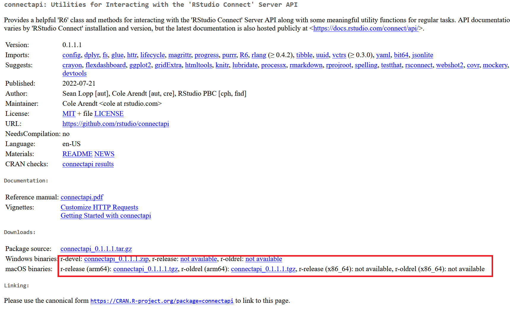may not be the latest

may not be the latest
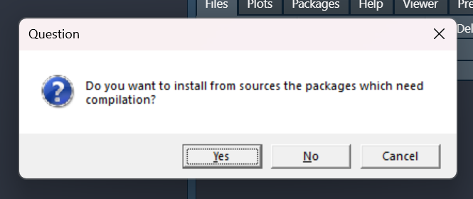may not be the latest
> install.packages("parallelly", repos = "https://cran.r-project.org")
Installing package into ‘C:/Users/WDAGUtilityAccount/Documents/R/win-library/4.0’
(as ‘lib’ is unspecified)
There is a binary version available but the source version is later:
binary source needs_compilation
parallelly 1.31.0 1.32.1 FALSE
installing the source package ‘parallelly’
trying URL 'https://cran.r-project.org/src/contrib/parallelly_1.32.1.tar.gz'
Content type 'application/x-gzip' length 124853 bytes (121 KB)
downloaded 121 KB
* installing *source* package 'parallelly' ...
** package 'parallelly' successfully unpacked and MD5 sums checked
** using staged installation
** R
** inst
** byte-compile and prepare package for lazy loading
** help
*** installing help indices
converting help for package 'parallelly'
finding HTML links ... done
as.cluster html
autoStopCluster html
availableConnections html
availableCores html
availableWorkers html
canPortBeUsed html
cpuLoad html
find_rshcmd html
freeCores html
freePort html
getOption2 html
isConnectionValid html
isForkedChild html
isForkedNode html
isLocalhostNode html
isNodeAlive html
makeClusterMPI html
makeClusterPSOCK html
parallelly.options html
pid_exists html
supportsMulticore html
*** copying figures
** building package indices
** testing if installed package can be loaded from temporary location
*** arch - i386
*** arch - x64
** testing if installed package can be loaded from final location
*** arch - i386
*** arch - x64
** testing if installed package keeps a record of temporary installation path
* DONE (parallelly)Posit Public Package Manager
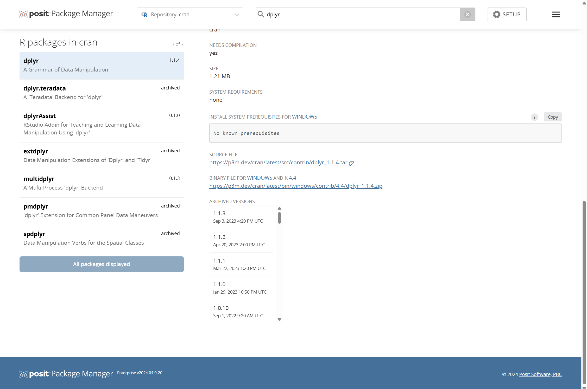PPM
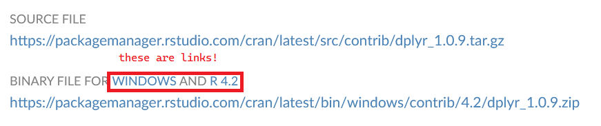how do I know I got a binary?
> install.packages("parallelly", repos = "https://cran.r-project.org")
Installing package into ‘C:/Users/edavi/Documents/R/win-library/4.1’
(as ‘lib’ is unspecified)
trying URL 'https://cran.r-project.org/bin/windows/contrib/4.1/parallelly_1.32.1.zip'
Content type 'application/zip' length 306137 bytes (298 KB)
downloaded 298 KB
package ‘parallelly’ successfully unpacked and MD5 sums checked
The downloaded binary packages are in
C:\Users\edavi\AppData\Local\Temp\Rtmpa2s3e8\downloaded_packages> install.packages("renv", repos="https://cran.r-project.org")
Installing package into ‘/Users/edavidaja/Library/R/x86_64/4.1/library’
(as ‘lib’ is unspecified)
trying URL 'https://cran.r-project.org/bin/macosx/contrib/4.1/renv_0.15.5.tgz'
Content type 'application/x-gzip' length 1866760 bytes (1.8 MB)
==================================================
downloaded 1.8 MB
The downloaded binary packages are in
/var/folders/b5/fl4ff68d23s148tg1_1gnflc0000gn/T//RtmpMk69B0/downloaded_packages> install.packages("remotes")
Installing package into ‘C:/Users/WDAGUtilityAccount/AppData/Local/R/win-library/4.2’
(as ‘lib’ is unspecified)
trying URL 'https://p3m.dev/cran/latest/bin/windows/contrib/4.2/remotes_2.4.2.zip'
Content type 'binary/octet-stream' length 399930 bytes (390 KB)
downloaded 390 KB
package ‘remotes’ successfully unpacked and MD5 sums checked
The downloaded binary packages are in
C:\Users\WDAGUtilityAccount\AppData\Local\Temp\RtmpA1edRi\downloaded_packagespop quiz, hotshot
Does Posit Public Package Manager serve a binary of dplyr for R 3.6?
Source
- compiled in your environment
- requires extra tools when package uses C, C++, Fortran, Rust, etc.
if you don’t have tools
Running `R CMD build`...
* checking for file 'C:\Users\WDAGUtilityAccount\AppData\Local\Temp\RtmpkTUH61\remotes192027624804\tidyverse-dplyr-36ef054/DESCRIPTION' ... OK
* preparing 'dplyr':
* checking DESCRIPTION meta-information ... OK
* cleaning src
* installing the package to process help pages
-----------------------------------
* installing *source* package 'dplyr' ...
** using staged installation
** libs
Warning in system(cmd) : 'make' not found
ERROR: compilation failed for package 'dplyr'
* removing 'C:/Users/WDAGUT~1/AppData/Local/Temp/Rtmp6hYuyV/Rinst1334d1a23d1/dplyr'
-----------------------------------
ERROR: package installation failedWarning in untar2(tarfile, files, list, exdir, restore_times) :
skipping pax global extended headers
* installing *source* package 'dplyr' ...
** using staged installation
** libs
c:/Rtools/mingw_64/bin/g++ -std=gnu++11 -I"C:/PROGRA~1/R/R-36~1.3/include" -DNDEBUG -O2 -Wall -mtune=core2 -c filter.cpp -o filter.o
sh: line 1: c:/Rtools/mingw_64/bin/g++: No such file or directory
make: *** [C:/PROGRA~1/R/R-36~1.3/etc/x64/Makeconf:215: filter.o] Error 127
ERROR: compilation failed for package 'dplyr'
* removing 'C:/Users/edavi/DOCUME~1/projects/WTF-PR~1/renv/staging/1/dplyr'
Error: install of package 'dplyr' failedhow to get the tools
got tools?
devtools::has_devel()
## Your system is ready to build packages!
system dependencies
* installing *source* package ‘xml2’ ...
** package ‘xml2’ successfully unpacked and MD5 sums checked
** using staged installation
Package libxml-2.0 was not found in the pkg-config search path.
Perhaps you should add the directory containing `libxml-2.0.pc'
to the PKG_CONFIG_PATH environment variable
Package 'libxml-2.0', required by 'virtual:world', not found
Package libxml-2.0 was not found in the pkg-config search path.
Perhaps you should add the directory containing `libxml-2.0.pc'
to the PKG_CONFIG_PATH environment variable
Package 'libxml-2.0', required by 'virtual:world', not found
Using PKG_CFLAGS=
Using PKG_LIBS=-lxml2
------------------------- ANTICONF ERROR ---------------------------
Configuration failed because libxml-2.0 was not found. Try installing:
* deb: libxml2-dev (Debian, Ubuntu, etc)
* rpm: libxml2-devel (Fedora, CentOS, RHEL)
* csw: libxml2_dev (Solaris)
If libxml-2.0 is already installed, check that 'pkg-config' is in your
PATH and PKG_CONFIG_PATH contains a libxml-2.0.pc file. If pkg-config
is unavailable you can set INCLUDE_DIR and LIB_DIR manually via:
R CMD INSTALL --configure-vars='INCLUDE_DIR=... LIB_DIR=...'
--------------------------------------------------------------------
ERROR: configuration failed for package ‘xml2’
* removing ‘/usr/local/lib/R/site-library/xml2’
The downloaded source packages are in
‘/tmp/Rtmp9JMc7F/downloaded_packages’
Warning message:
In install.packages("xml2") :
installation of package ‘xml2’ had non-zero exit status* installing *source* package ‘s2’ ...
** package ‘s2’ successfully unpacked and MD5 sums checked
** using staged installation
Testing compiler using PKG_CFLAGS=
--------------------------- [ANTICONF] --------------------------------
Configuration failed because openssl was not found. Try installing:
* deb: libssl-dev (Debian, Ubuntu, etc)
* rpm: openssl-devel (Fedora, CentOS, RHEL)
* csw: libssl_dev (Solaris)
* brew: openssl@1.1 (Mac OSX)
If openssl is already installed, check that 'pkg-config' is in your
PATH and PKG_CONFIG_PATH contains a openssl.pc file. If pkg-config
is unavailable you can set INCLUDE_DIR and LIB_DIR manually via:
R CMD INSTALL --configure-vars='INCLUDE_DIR=... LIB_DIR=...'
-------------------------- [ERROR MESSAGE] ---------------------------
tools/version.c:1:10: fatal error: openssl/opensslv.h: No such file or directory
1 | #include <openssl/opensslv.h>
| ^~~~~~~~~~~~~~~~~~~~
compilation terminated.
--------------------------------------------------------------------
ERROR: configuration failed for package ‘s2’
* removing ‘/usr/local/lib/R/site-library/s2’* installing *source* package ‘units’ ...
** package ‘units’ successfully unpacked and MD5 sums checked
** using staged installation
configure: units: 0.8-5
...
configure: error:
--------------------------------------------------------------------------------
Configuration failed because libudunits2.so was not found. Try installing:
* deb: libudunits2-dev (Debian, Ubuntu, ...)
* rpm: udunits2-devel (Fedora, EPEL, ...)
* brew: udunits (OSX)
If udunits2 is already installed in a non-standard location, use:
--configure-args='--with-udunits2-lib=/usr/local/lib'
if the library was not found, and/or:
--configure-args='--with-udunits2-include=/usr/include/udunits2'
if the header was not found, replacing paths with appropriate values.
You can alternatively set UDUNITS2_INCLUDE and UDUNITS2_LIBS manually.
--------------------------------------------------------------------------------
See `config.log' for more details
ERROR: configuration failed for package ‘units’
* removing ‘/usr/local/lib/R/site-library/units’* installing *source* package ‘sf’ ...
** package ‘sf’ successfully unpacked and MD5 sums checked
** using staged installation
configure: CC: gcc
configure: CXX: g++ -std=gnu++17
checking for gdal-config... no
no
configure: error: gdal-config not found or not executable.
ERROR: configuration failed for package ‘sf’
* removing ‘/usr/local/lib/R/site-library/sf’
The downloaded source packages are in
‘/tmp/Rtmp8bqjb0/downloaded_packages’
Warning message:
In install.packages("sf") :
installation of package ‘sf’ had non-zero exit statusbonus complication
runtime dependencies
The downloaded source packages are in
‘/tmp/RtmpIvTerY/downloaded_packages’
> library(sf)
Error: package or namespace load failed for ‘sf’ in dyn.load(file, DLLpath = DLLpath, ...):
unable to load shared object '/usr/local/lib/R/site-library/units/libs/units.so':
libudunits2.so.0: cannot open shared object file: No such file or directorywhich sysdeps?
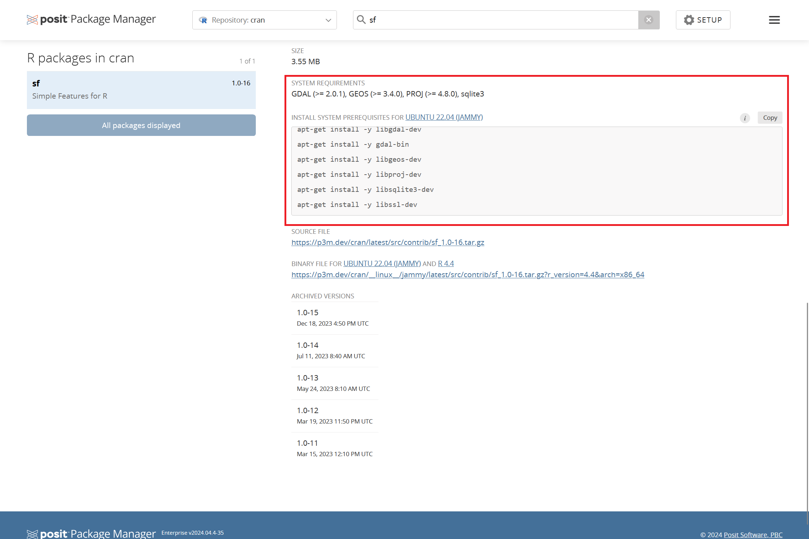activity
install a package from r-universe
open the
wtf-explore-librariesproject from earlierinstall.packages("gitcellar")# not on cran!update your project
.Rprofile:
usethis::edit_r_profile(scope = "project")save
.Rprofileand restart Rinstall.packages("gitcellar")
discussion
- did you install
gitcellarfrom binary or source?- How do you know?
wrapping up
binaries are usually preferred, but for development versions of packages, you may need to install from source.
creating reproducible environments
why?
put some science in “data science”
reproducibility strategies
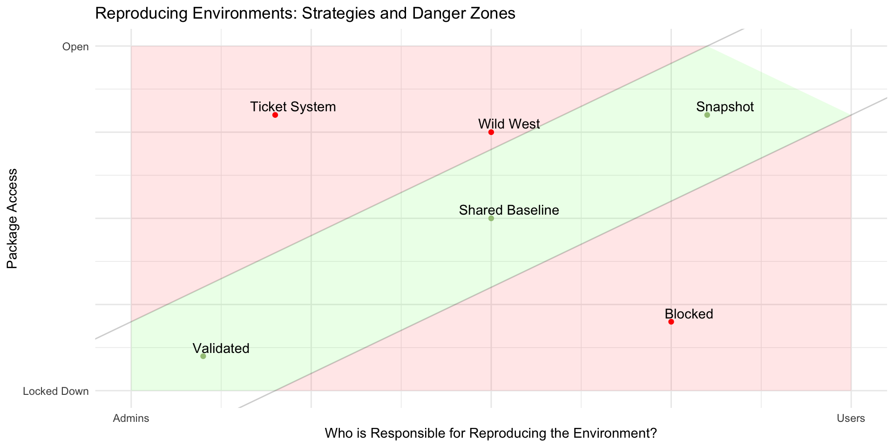reproducibility strategies
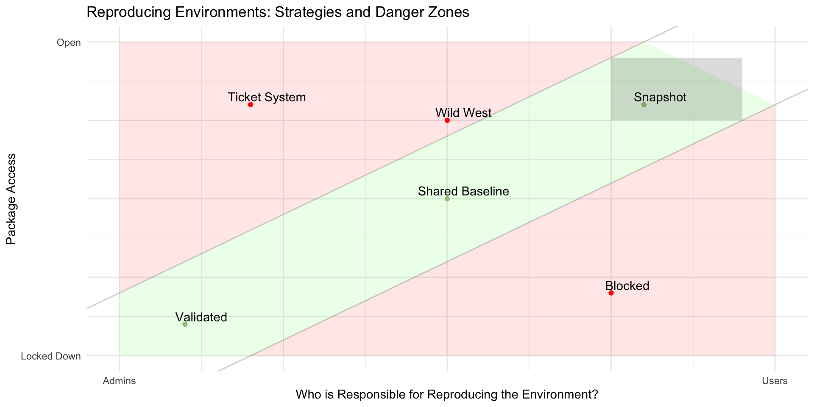tools
p3m
renv
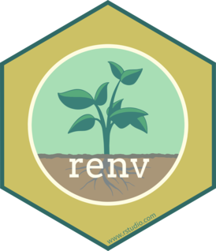
p3m
p3m: latest

p3m: date-based snapshots

activity
time travel!
open the
wtf-explore-librariesprojectrun
packageVersion("dplyr")update your project
.Rprofilewith a date-based snapshot of CRANRestart R
install.packages("dplyr")
what version of dplyr did you install?
{{< countdown "5:00" >}}⏪
- remove the repository configuration from your project
.Rprofile - restart R
- reinstall whatever versions of dplyr you were using before
if that process seems silly, ✨ you should use renv ✨
renv
shared project environment
.libPaths()
isolated project environments
.libPaths()
isolated project environments
- experiment with new packages without breaking other projects
- share exactly which versions you’re using with your team or future you
- re-use packages you’ve already installed
activity
create an isolated project library
activity
manage dependencies
add library(parallelly) to any file in the wtf-2024/R directory
remove library(parallelly) from the file you added it to
renv::install()
or install.packages() with shims enabled
renv::install("jsonlite")
renv::install("jsonlite@1.2") # at version
renv::install("jeroen/jsonlite") # latest
renv::install"jeroen/jsonlite@80854359976250f30a86a6992c0d8c3b3d95473d") # at SHA
renv::install("path/to/package") # local sourcethe junk drawer
for reprexes, tweets, and other ephemera:
~/Documents/scratch
installing / upgrading R
why
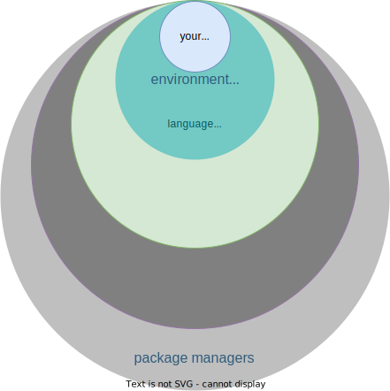
why
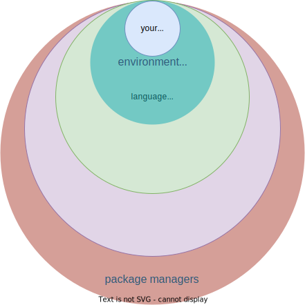
bigger context
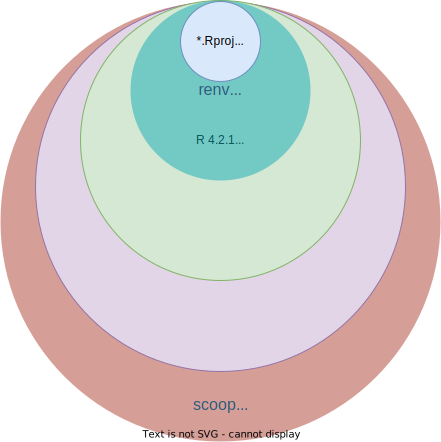
practice makes perfect
“run this command” >> clickOps
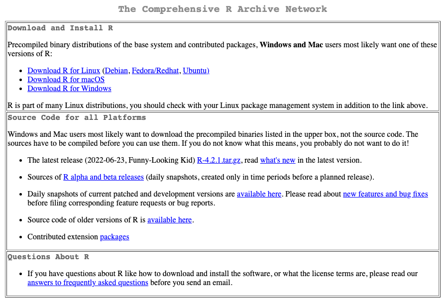package managers
software whose job it is to install other software 🙉 not the same kinds of packages as PPM
| package manager | |
|---|---|
| {{< fa brands windows >}} windows | scoop, chocolatey, winget |
| {{< fa brands apple >}} macOS | homebrew |
| {{< fa brands linux >}} linux | homebrew, apt, yum, zypper |
⚠️
Avoid installing your language with a package manager
language managers
using your package manager, install rig:
language managers for other languages:
{{< fa brands python >}} pyenv
{{< fa brands node-js >}} nvm
{{< fa brands rust >}} rustup
{{< fa globe >}} asdf
{{< fa globe >}} mise-en-place
list installed R versions
language versions
using rig, install a version of R:
❯ rig install --help
Description:
Download and install an R version, from the official sources.
It keeps the already installed R versions, except versions within the
same minor branch, see below.
Options:
--without-cran-mirror
Do not set the cloud CRAN mirror
--without-pak
Do not install pak.
--pak-version <pak-version>
pak version to install.
[default: stable]
[possible values: stable, rc, devel]
-a, --arch <arch>
Select macOS arch: arm64 or x86_64
[default: arm64]
[possible values: arm64, x86_64]
-h, --help
Print help (see a summary with '-h')
Examples:
# Add the latest development snapshot
rig add devel
# Add the latest release
rig add release
# Install specific version
rig add 4.1.2
# Install latest version within a minor branch
rig add 4.1
# Install arm64 build of R (default on arm64 macs)
rig add -a arm64 release
# Install x86_64 build of R (default on x86_64 macs)
rig add -a x86_64 releaseswitching default versions
❯ rig switch --help
Description:
Print or set the default R version. The default R version is the one that
is started with the `R` command, usually via the `/usr/local/bin/R`
symbolic link.
`rig switch` is an alias of `rig default`.
Usage: rig default [OPTIONS] [version]
Arguments:
[version]
new default R version to set
Options:
--json
JSON output
-h, --help
Print help (see a summary with '-h')
Examples:
# Query default R version
rig default
# Set the default version
rig default 4.1launch rstudio
❯ rig rstudio --help
Description:
Start RStudio with the specified R version.
If the RStudio project or the specified directory contains an `renv.lock`
file (created by the renv package), and `version` is not specified, then
rig will read the preferred R version from the `renv.lock` file.
If the same exact version is not installed, then rig chooses
the latest version with the same major and minor components. If no such
version is available, rig throws an error.
Examples:
# With default R version
rig rstudio
# With another R version
rig rstudio 4.0
# Open project with default R version
rig rstudio cli.Rproj
# Open renv project with the R version specified in the lock file
rig rstudio projects/myproject/renv.lock
# Open RStudio project with specified R version, either is good
rig rstudio 4.0 cli.Rproj
rig rstudio cli.Rproj 4.0
Usage: rig rstudio [version] [project-file]
Arguments:
[version]
R version to start
[project-file]
RStudio project file (.Rproj) to openactivity
migrate a project from one R version to another
- use
renv::snapshot()to create anrenv.lockfile - close RStudio
- launch RStudio with a different R version
- use
renv::restore()to restore your project